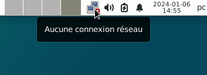
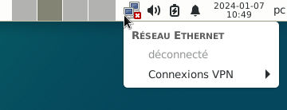
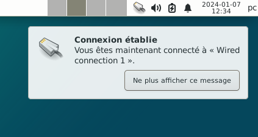
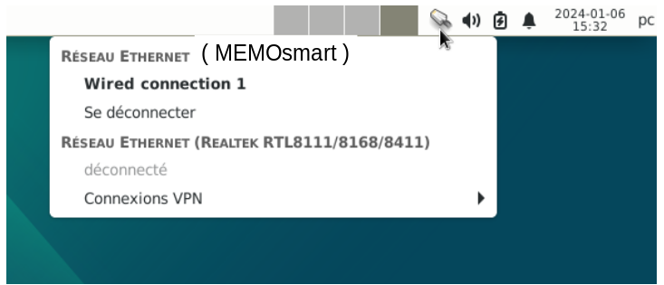
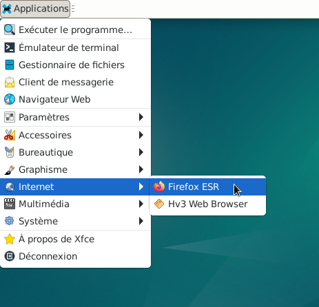
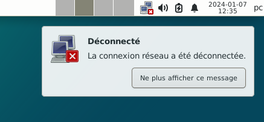

GLICD
Utiliser le smartphone pour connecter le PC à internet :
Debian et
Xfce
Ceci est très utile pour se connecter à internet, par exemple sur un PC portable, en dehors de chez soi ou pour ceux
qui n'ont pas internet via un réseau câblé.
Le smartphone va remplacer par exemple la box internet.
Il faut s'assurer que le forfait mobile soit suffisant pour une connexion internet.
Pour bien comprendre l'exemple qui va suivre, ne pas brancher le PC à la box via un câble ou via le wi-fi, ou à un réseau.
Dans cet exemple, Android est le système d'exploitation du smartphone.
- Se reporter dans un premier temps au chapitre :
Les périphériques réseaux (Internet)
- En haut à droite du bureau l'icône « Périphériques réseaux (Internet) » doit être dans
cette configuration.

- Placer le pointeur de la souris sur l'icône :
La notification « Aucune connexion réseau » doit apparaître.

- Simple clic sur l'icône

- Aucun réseau Ethernet disponible, « déconnecté » est grisé.
- Déverrouiller le smartphone à l'aide de votre mot de passe. Attention, si le smartphone est
verrouillé la connexion ne se fera pas.
Connecter le smartphone au PC à l'aide d'un câble USB, le smartphone apparaît sur le bureau.
Dans cet exemple, le smartphone apparaît sur le bureau sous le nom : MEMOsmart
(ce ne sera pas le même nom)

- Vérifier sur le smartphone sa bonne configuration dans :
Paramètres > Appareils connectés > Préférences USB ou USB > Partage de connexion via USB
Ou pour certains : Partage de connexion > USB > Partage de connexion via USB
Ou pour d'autres, quelque-chose d'approchant.
- Une notification apparaît :
"Connexion établie, vous êtes maintenant connecté à « Wired connection 1 »"

- En haut à droite du bureau l'icône « Périphériques réseaux (Internet) » est maintenant dans
cette configuration.

- Placer le pointeur de la souris sur l'icône, comme ci-dessous :

- Une notification apparaît :
"Connexion au réseau Ethernet « Wired connection 1 » active"
Cela veut dire que le PC est bien connecté à un réseau (qui permet d'accéder à internet) et le nom
de la connexion est « Wired connection 1 ».
Simple clic sur l'icône

- Une liste déroulante apparaît :
Le réseau Ethernet avec le nom du smartphone : (ici) MEMOsmart
Et le réseau Ethernet (Realtek RTL8111/8168/8411)

- Sur le smartphone et pour bien comprendre l'exemple :
Désactiver le wifi
Désactiver le bluetooth
Ne pas oublier d'activer les « Données mobiles ». La plupart du temps, elles sont toujours actives.
Les données mobiles permettent l'accès à internet directement via le smartphone.
- pour vérifier la connexion, ouvrir le naviguateur internet Firefox
Simple clic > Applications > Internet > Firefox ESR

- L'application Firefox s'ouvre et il est maintenant possible de naviguer sur internet.
- Sur le smartphone, avant de le débrancher, se rendre dans :
Paramètres > Appareils connectés > Préférences USB ou USB > Aucun transfert de données
Ou pour certains : Partage de connexion > USB > Aucun transfert de données
Ou pour d'autres, quelque-chose d'approchant
- Une notification apparaît :
« Déconnecté, la connexion réseau a été déconnectée »

- Débrancher le smartphone

Retour
Informations sur le logiciel libre et
Merci.
Marques déposées :
Ce site ne fait pas partie de Debian, n'est pas produit par le projet
Debian, ni approuvé par le projet Debian.
Ce site n'est pas affilié à Debian. Debian est une marque déposée appartenant
à Software in the Public Interest, Inc.
Contribuer :
Ce site ne fait pas partie de XFCE, n'est pas produit par le projet
XFCE, ni approuvé par le projet XFCE.
Ce site n'est pas affilié à XFCE.
Ce site est juste réalisé par un passionné.